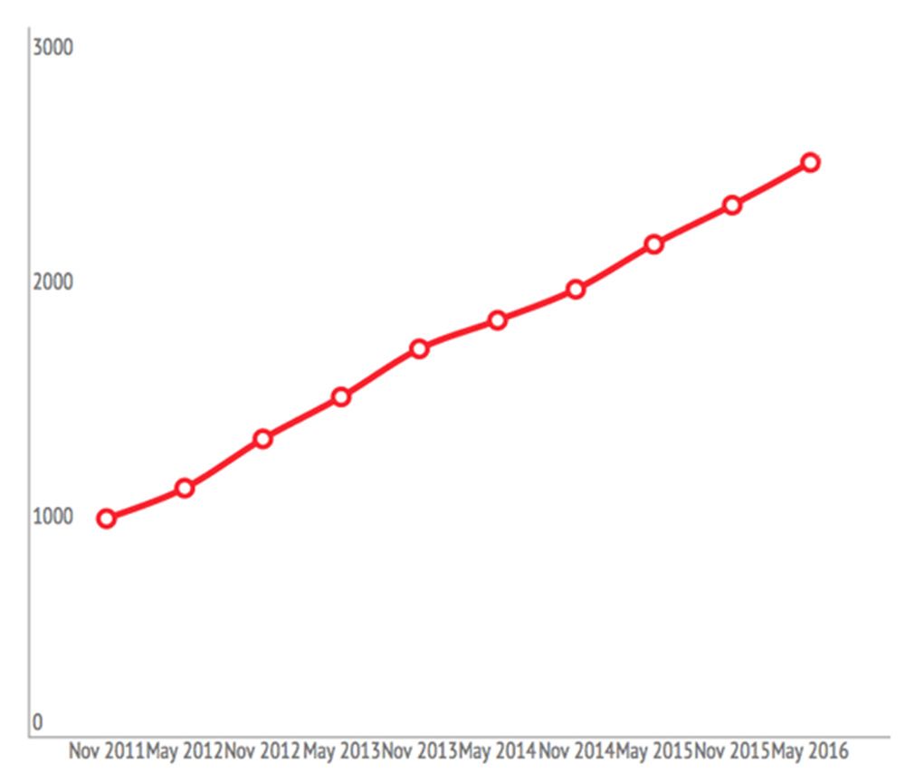
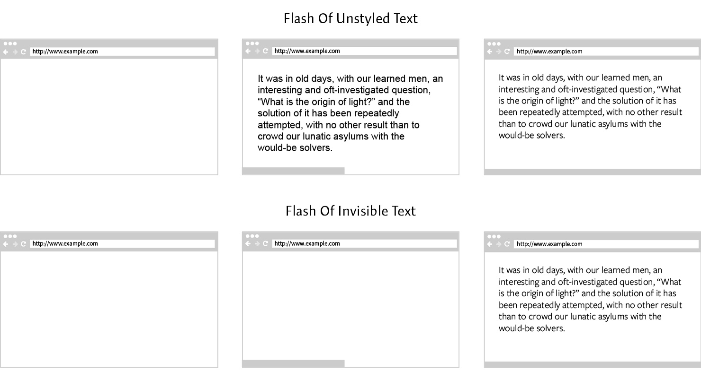

Средний размер веб-страницы (kb)
JavaScript
<!DOCTYPE html>
<html>
<head>
...
<script src="https://path/to/file.js"></script>
...
</head>
...
</html>
wp_enqueue_script( $handle, $src, $deps, $ver, $in_footer = true );
<!DOCTYPE html>
<html>
<head>
...
</head>
...
<script src="https://path/to/file.js"></script>
</html>
~70%
Перенесем в футер
wp_scripts()->add_data( 'jquery', 'group', 1 );
wp_scripts()->add_data( 'jquery-core', 'group', 1 );
wp_scripts()->add_data( 'jquery-migrate', 'group', 1 );
Добавим ассинхронности
async / defer
add_filter( 'script_loader_tag', function ( $tag, $handle ) {
return !is_admin()
? str_replace( ' src', ' defer src', $tag )
: $tag;
}, 10, 2 );
<script defer src="https://path/to/file.js"></script>
async vs defer
Pick a side

Файл не имеет зависимостей - async, в других случаях defer.
<script>
jQuery(function ($) {
...
});
</script>
Подмена jQuery
- Создаем вначале страницы объект jQuery и методы on, ready, load, bind ...
- Сохраняем обработчики в глобальные массивы, например, bindReadyQ, bindLoadQ ...
- После того как библиотека подключена проходим по элементам массивов и выполняем сохраненные обработчики
- jquery-replacement-top.js
-
https://goo.gl/RGHwE6add_action( 'wp_head', function () { ?> <script> // Insert inline JS code here </script> <?php } ); - jquery-replacement-bottom.js
- Вставляем в файл, который подключаетя после jQuery https://goo.gl/9PsZxk
Минификация и конкатенация
Инструменты для сборки
Плагины
Онлайн сервисы
CSS
Асинхронная загрузка
Resource Hints
add_filter( 'style_loader_tag', function ( $tag, $handle ) {
return !is_admin()
? str_replace(
' rel=\'stylesheet\'',
' rel=\'preload\' as=\'style\'
onload=\'this.rel="stylesheet"\'',
$tag
) . "<noscript>$tag</noscript>"
: $tag;
}, 10, 2 );
<link rel="preload" as="style" onload="this.rel='stylesheet'"
href="https://path/to/file.css">
<noscript>
<link rel="stylesheet" href="https://path/to/file.css">
</noscript>
loadCSS
Для браузеров не поддерживающих rel="preload", используем полифилл
add_action( 'wp_head', function () {
?>
<script>
// Insert inline JS code here
</script>
<?php
}, 99 );
Critical CSS
add_action( 'wp_head', function () {
?>
<style>
// Insert inline CSS code here
</style>
<?php
}, 1 );
or
wp_add_inline_style( $handle, 'inline styles' );
Модули
- Critical
- https://github.com/addyosmani/critical
- CriticalCSS
- https://github.com/filamentgroup/criticalCSS
Плагин
- Above The Fold Optimization
- https://wordpress.org/plugins/above-the-fold-optimization/
Онлайн сервис
- Critical Path CSS Generator
- https://jonassebastianohlsson.com/criticalpathcssgenerator/
Шрифты
Google Fonts
wp_enqueue_style(
'font-open-sans-regular',
'//fonts.googleapis.com/css?family=Open+Sans'
);
wp_enqueue_style(
'font-open-sans-condensed',
'//fonts.googleapis.com/css?family=Open+Sans+Condensed'
);
=
wp_enqueue_style(
'font-open-sans',
'//fonts.googleapis.com/css?family=Open+Sans|Open+Sans+Condensed'
);
Фиксированный набор символов
wp_enqueue_style(
'font-open-sans-condensed',
'//fonts.googleapis.com/css?family=Tangerine&text=WordPress'
);
FOUT / FOIT
Font Face Observer
var font = new FontFaceObserver('My Family');
font.load().then(function () {
document.documentElement.className += " fonts-loaded";
});
.fonts-loaded body {
font-family: My Family, sans-serif;
}
В заключение
- Не забывайте все пеепроверять
- Не экспериментируйте на продакшене
- Не переусердствуйте
Спасибо за внимание!
- E-mail:
- victor@pingbull.no
- GitHub:
- https://github.com/Viktor777